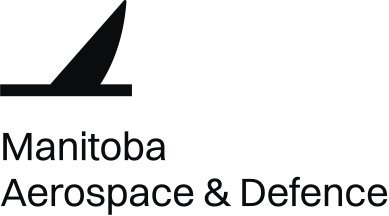

Manitoba Aerospace & Defence. Logo, concept 1
Manitoba, as a map. The real outline, from the 49th parallel to the 60th, cut at every degree between. Hudson Bay on the northeast, the Ontario line climbing to meet it.
Manitoba, as a map. The real outline, from the 49th parallel to the 60th, cut at every degree between. Hudson Bay on the northeast, the Ontario line climbing to meet it.
